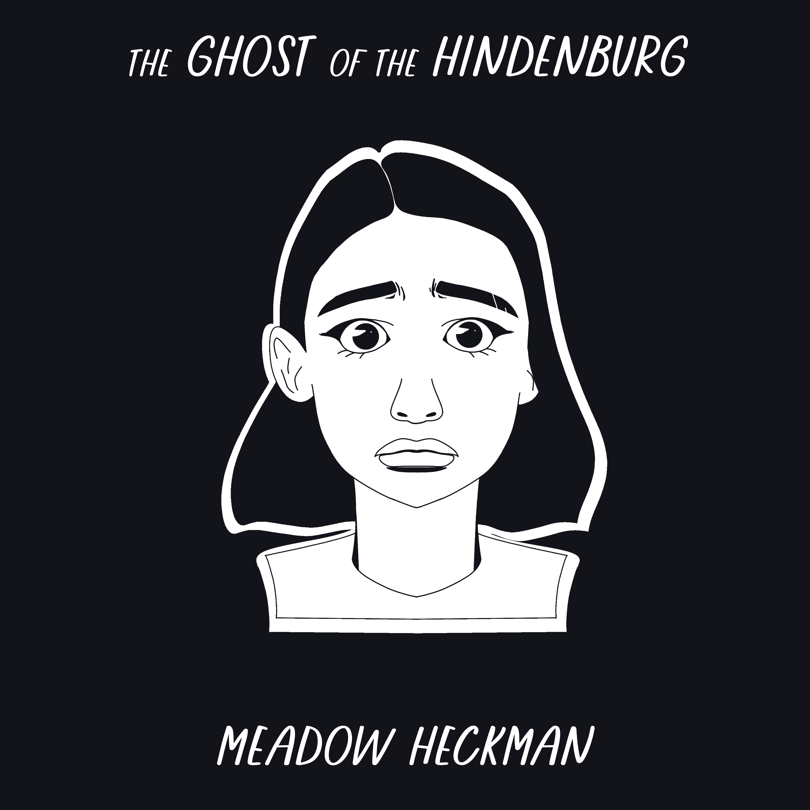
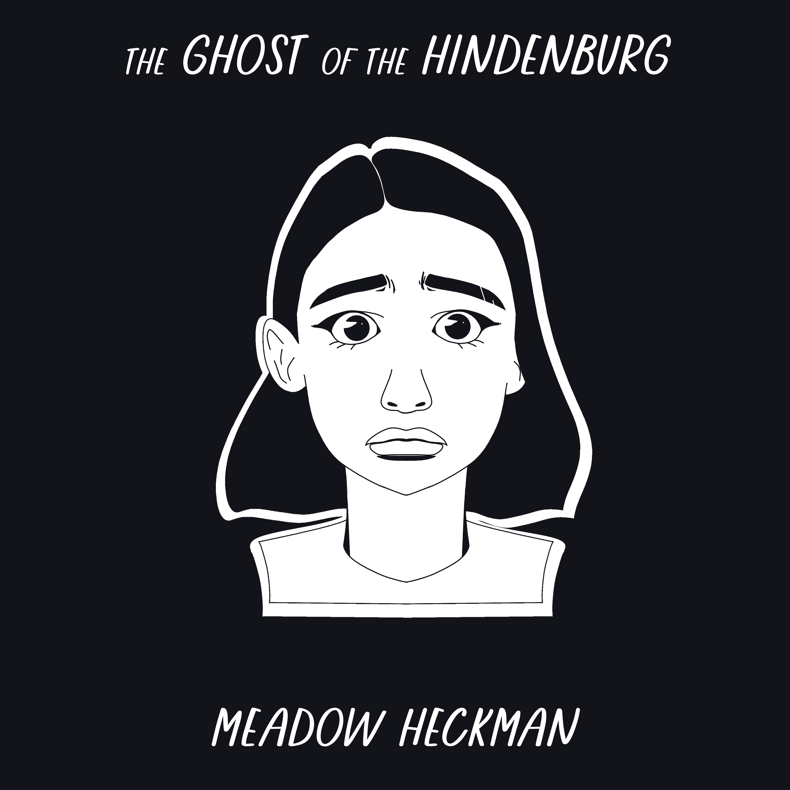

Tes had prepared for the plane crash. What she hadn't prepared for was the game of survival afterward.
Stranded in the desert, she and her remaining classmates are seeking shelter from the harsh climate when they come across the battered remains of the Hindenburg, an airship that had been lost for nearly two decades. The group takes refuge inside, but when the disembodied sound of sobbing fills the halls, they start to wonder if the haunted ship should've remained lost.


Follow the story of Luna, a homeless teen with skewed morals, as she and her mechanical cat Freckles struggle to live a normal, problem-free life that keeps getting interrupted by bad men with bad plans.